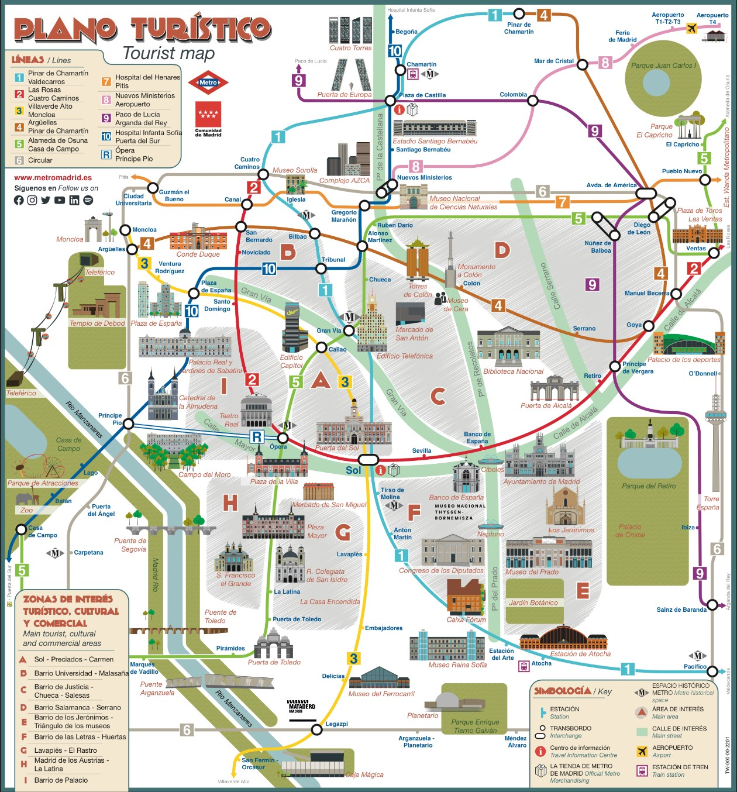

Madrid in 4 Tagen
Du möchtest die Hauptstadt Spaniens in nur 4 Tagen besichtigen? Kein Problem! Wir haben eine Tour durch die Stadt geplant mit der du alles was du machen musst auch tust.
Tour
Tag 1
Am ersten Tag lernt man die Stadt kennen. Man spaziert durch den Stadtzentrum und guckt sich die Highlights an.
Tag 2
Am zweiten Tag sind die Museen dran! Besichtige das Prado, das Reina Sofía und das Thyssen Bornemisza Museum. Am Nachmittag kann man auch ein Spaziergang bis zum Atocha-Bahnhof machen.
Tag 3
Am dritten Tag besucht man den Retiro Park, die Puerta de Alcala und den Templo de Debod.
Tag 4
Am vierten Tag kann man entscheiden ob man in Ruhe sich die Basilica de San Francisco el Grande anguuckt oder einen Ausflug zu einem Dorf in der Nähe von Madrid macht: El Escorial.
Sich in Madrid bewegen
In Madrid ist die bevorzugte Transportwahl von vielen die U-Bahn, in Madrid Metro genannt. Die U-Bahn kommt überall hin. Um diese zu benutzen muss man die Multi-Karte (mehrere Personen können diese benutzen) kaufen und die dann mit Tickets aufladen. Jedes Ticket kostet 1,20 Euro. Mit einem Ticket kann man soviel umsteigen wie man will ohne die U-Bahn zu verlassen. Hier gibt es eine U-Bahn Karte auf der sich das Stadrzentrum, die wichtigsten Haltestellen und Orte befinden.
Essen
Wenn man an Spanien denkt, fällt wahrscheinlich einem ausser Sonne noch Essen ein, oder nicht? Deshalb haben wir eine Liste der besten Bars und Restaurants in der Stadt zusammengestellt. Hier kannst du mehr erfahren.
Tips
Um dich in Madrid besser zurechtzufinden hast du hier einige Tips:
- Wenn du mehr Information zu den Sehnswürdigkeiten brauchst gibt es auf der offizielen Webseite der Stadt mehr Infos dazu!
- Die Essenszeiten in Spanien sind generell von 14-16 Uhr oder sogar bis 17 Uhr am Sonntag. Abendessen fängt frühestens um 20:30 an. Um sicher einen Tisch frei zu haben, mach besser vorher eine Reservierung im Restaurant oder sei früher da.